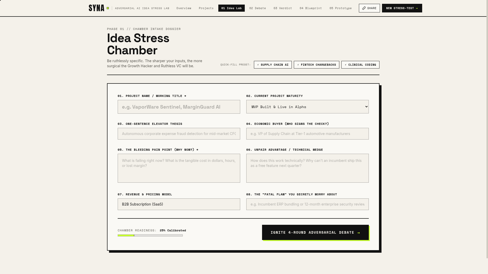
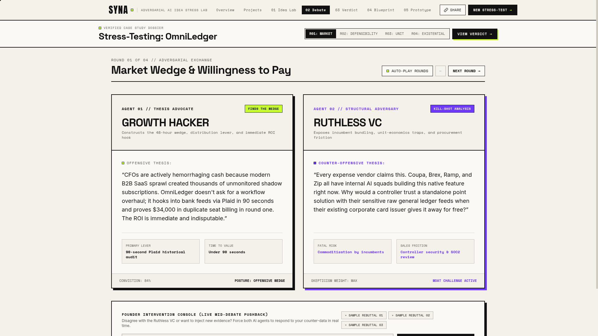
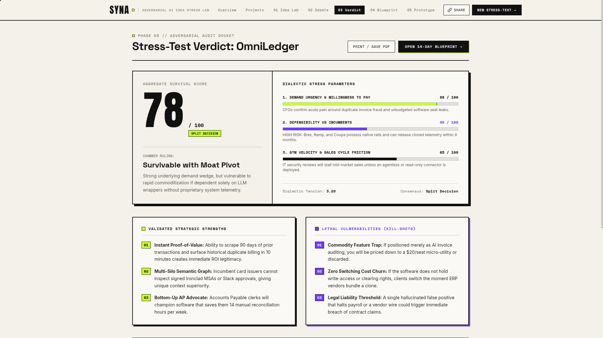
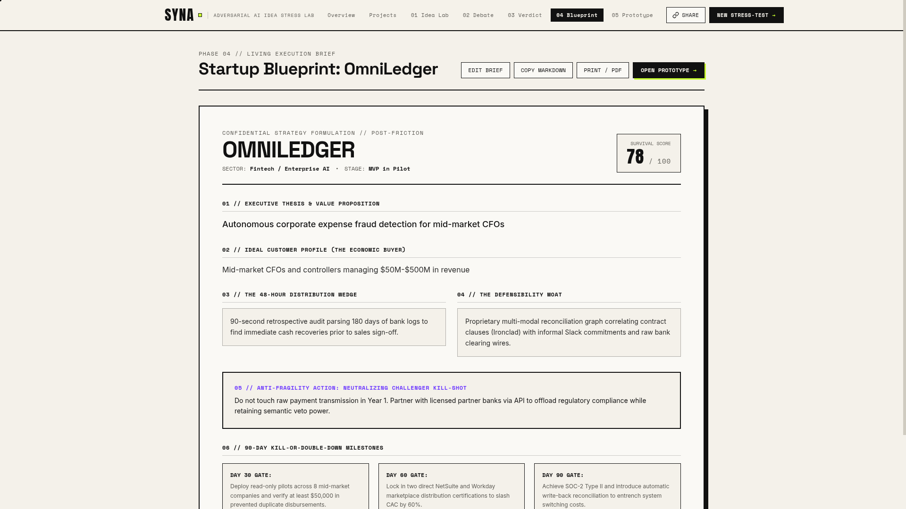
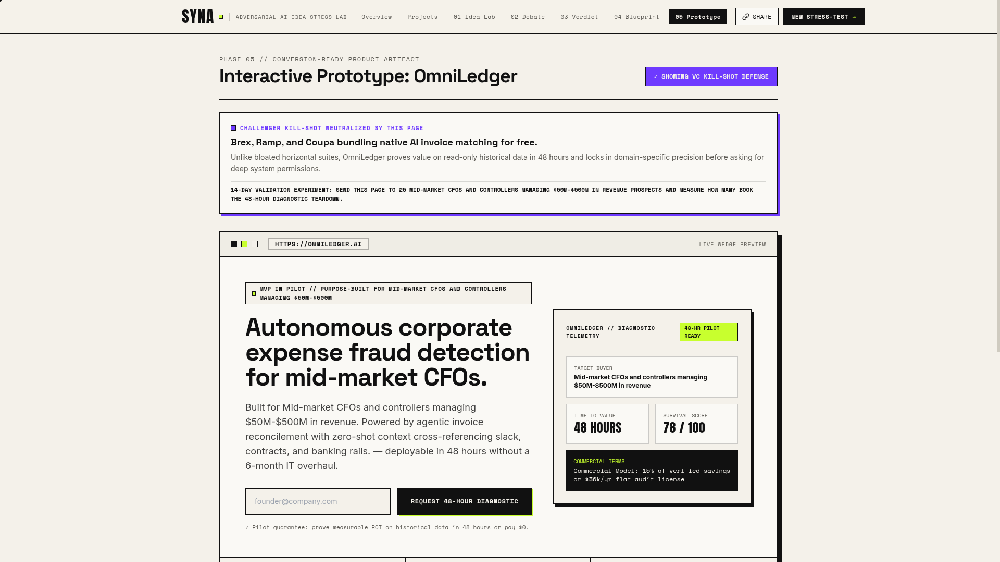
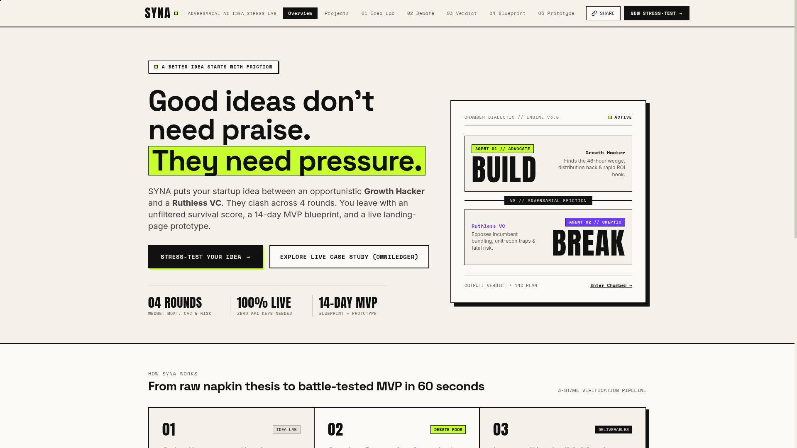

Good ideas don’t need praise.
They need pressure.
SYNA puts any startup thesis between an opportunistic Growth Hacker and a Ruthless VC across 4 adversarial rounds—delivering an un-inflated survival score, a 14-day execution blueprint, and a live landing-page prototype in 60 seconds.
Finds the 48-hour wedge, distribution hack & rapid ROI hook.
Exposes incumbent bundling, unit-econ traps & fatal risk.
Standard AI chatbots are trained to be polite.
Markets and VCs are trained to be ruthless.
When a founder pitches a weak idea to a generic LLM, RLHF politeness produces sycophantic validation instead of structural pushback:
SYNA replaces polite agreement with a structured 4-round adversarial clash between two opposing incentives:
Two specialized agents clash across 4 rounds. You can intervene live.
Every claim is anchored to the founder’s specific buyer, pricing model, and technical wedge—never recycled generic SaaS advice.
Market Wedge & Willingness to Pay
Can the founder prove dollar ROI in 48 hours without an IT overhaul, or will buyers treat this as a vitamin?
Defensibility & Feature vs. Company
Why can’t the incumbent ERP/card rail bundle a 70%-as-good clone for free next quarter? Where is the data moat?
Unit Economics & Go-To-Market
Does bottom-up distribution work, or do SOC-2 reviews and bespoke onboarding turn SaaS margins into consulting?
Existential Risk & The Saving Bet
What single false-positive or regulatory liability kills the company, and what architectural bet neutralizes it?
Live Founder Intervention Console

Surgical Thesis Calibration + 1-Click Presets
Captures working title, maturity stage, elevator thesis, economic buyer, bleeding pain point, technical wedge, revenue model, and the founder’s secret fear—plus 1-click presets (Supply Chain AI, Fintech Chargebacks, Clinical Coding) for instant testing.

Head-to-Head Dialectic + Rebuttal Injection
Side-by-side adversarial cards highlight the Growth Hacker’s Primary Lever & Time to Value against the Ruthless VC’s Fatal Risk & Sales Friction, with round-by-round navigation, auto-play mode, and live mid-debate founder intervention.

Un-Inflated Scoring & Kill-Shot Docket
Scores Demand Urgency, Defensibility vs. Incumbents, and GTM Velocity out of 100. Lists 3 validated strengths, 3 lethal vulnerabilities, and presents a concrete Path A (Fast Wedge) vs. Path B (Moat Lock-In) decision fork.

14-Day MVP Build Plan & 30/60/90-Day Gates
Translates the debate into an editable execution brief: ICP, 48-hour wedge, anti-fragility action neutralizing the VC’s kill-shot, strict Day 30/60/90 validation gates, and a day-by-day 14-day build sprint (what to ship vs. what to refuse to build).

Neutralizes the VC Kill-Shot Upfront
Every generated prototype embeds a dedicated defense banner explaining how the product overcomes the exact objection raised by the Ruthless VC during the debate.
48-Hour Pilot Hook & Commercial Terms
Generates buyer-specific headline copy, a working pilot waitlist capture interaction, commercial pricing terms, and 3 FAQ answers tailored to the founder’s thesis.
Clicking Share encodes the entire custom project dossier into a self-contained URL hash (`#page=verdict&share=...`) so co-founders and judges can open any live stress-test on any device.
Built for 100% reliability across Cloudflare Pages, Node, and Static Hosting
Zero build step required. Pre-wired Gemini API key + multi-model fallback cascade guarantees judges never hit a dead end or configuration modal.
Single-File React 18 Dossier SPA
- 5-Stage State Machine: Idea Lab → Debate → Verdict → Blueprint → Prototype.
- Local + URL Persistence: Saves dossiers in
localStorageand Base64 URL hashes. - Print / Markdown Engine: Native
@media printPDF export & clean Markdown clipboard copy.
Cloudflare Pages Functions + Node Server
POST /api/debate: Orchestrates 4-round debate, audit, blueprint, and landing page synthesis.POST /api/intervene: Injects founder rebuttal and recalculates survival score delta.GET /api/health: Verifies Gemini key readiness and active model cascade.
Cascading Gemini Model Router
- Model Cascade: Automatically falls back across
gemini-3.1-flash-lite→gemini-3.8-flash→gemini-3.5-flash→gemini-flash-latest. - Strict JSON Schema: Uses
responseMimeType: "application/json"+ fault-tolerant parser. - Deterministic Fallback: Idea-specific synthesis engine guarantees zero downtime even offline.
OmniLedger — Autonomous corporate expense fraud detection for mid-market CFOs
90-Second Read-Only Plaid Audit
“Don’t ask CFOs for a 6-month ERP overhaul. Hook read-only into 90 days of historical logs and surface $34,000 in duplicate SaaS seats and shadow billing in round one. Charge 15% of verified savings.”
Incumbent Bundling & Wire Liability
“Brex, Ramp, and Coupa already own the card rail and are bundling native AI receipt matching for free. Worse: the first time your AI halts a legitimate payroll wire, the CFO fires you immediately.”
Multi-Silo Semantic Graph
Refuse to touch raw payment rails in Year 1. Build the moat where card issuers are blind: cross-referencing signed Ironclad MSAs and Slack thread approvals against ERP invoices.
Not another chatbot wrapper—an end-to-end adversarial venture foundry
| Capability / Dimension | Generic LLM Chatbots | Static Pitch Generators | SYNA Stress Chamber |
|---|---|---|---|
| Analytical Posture | Sycophantic ("Yes-Man" praise) | Cosmetic formatting only | 4-Round Adversarial Clash (Build vs. Break) |
| Incumbent & Moat Audit | Generic SWOT bullet points | None | Names specific incumbents, CAC traps & liability |
| Founder Pushback Loop | Unstructured chat thread | Static one-shot generation | Live Mid-Debate Intervention + Score Delta |
| Execution Plan Output | Vague 6-month roadmap | Slide templates | Day-by-Day 14-Day MVP Sprint + 30/60/90 Gates |
| Customer Validation Artifact | None | None | Interactive SaaS Landing Page + Objection Defense |
Kill weak assumptions in 60 seconds before spending 6 months building a feature incumbents bundle for free.
Standardize cohort stress-testing with shareable dossier URLs, survival scores, and falsifiable 14-day pilot experiments.
Rapidly compare dozens of vertical AI theses across Demand Urgency, Defensibility, and GTM Velocity.
Enter the chamber.
Stress-test your idea in 60 seconds.
Click a 1-click preset in the Idea Lab or type any startup thesis. Watch the Growth Hacker and Ruthless VC clash across 4 rounds, inject a live founder rebuttal, and export your 14-day blueprint and interactive prototype.
